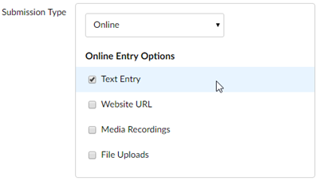

Canvas: Setting Up a Video Assignment Using Kaltura
This page teaches instructors how to create a video assignment in canvas.
The following steps apply to assigning to individual students, not group work.
- Go to the Course Navigation Menu > Assignments.
-
Click the Add Assignment button.

- Type the name of the assignment in the Assignment Name text box.
- Type the assignment instructions in the text box.
- Scroll down to the Points text box and type the highest grade students can receive.
- Select the Assignment Group from the drop-down list, if necessary.
- Go to the Submission Type drop-down list and select Online. The box expands to reveal the options.
-
Choose Text Entry in the Online Entry Options.

-
Scroll down to the Assign to options. Using the date pickers:
- Select the Due date.
- Select the Available from and Until dates.
-
Click Save & Publish. The assignment displays.
Click Save if you are not ready to make the assignment visible to students.Your students will now be able to upload their Kaltura video/audio work in the assignment area's text box using the Embed Kaltura Media tool. See Canvas for Students: Submit a Video/Audio Assignment Using Kaltura.